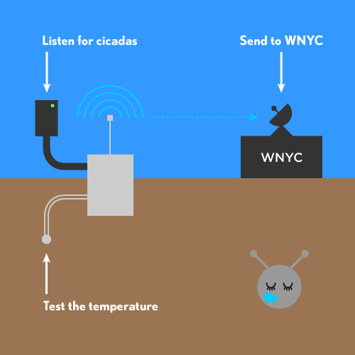

Building the DIY Kit
-

The Brood II bot kit listens for cicada sounds, tests the soil temperature, then sends the data to WNYC. -

Parts
Here are the parts you need to start building your kit:- Arduino Uno
- Thermistor
- Microphone
- Wire wrapping tool
- Electric tape
- Pole/stick/stake
-

First, go shop for materials at a store like the venerable Radioshack. -

Put together your kit with care, especially when wrapping wires.